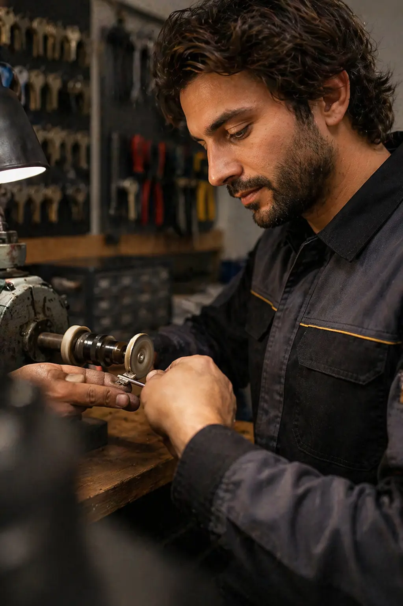
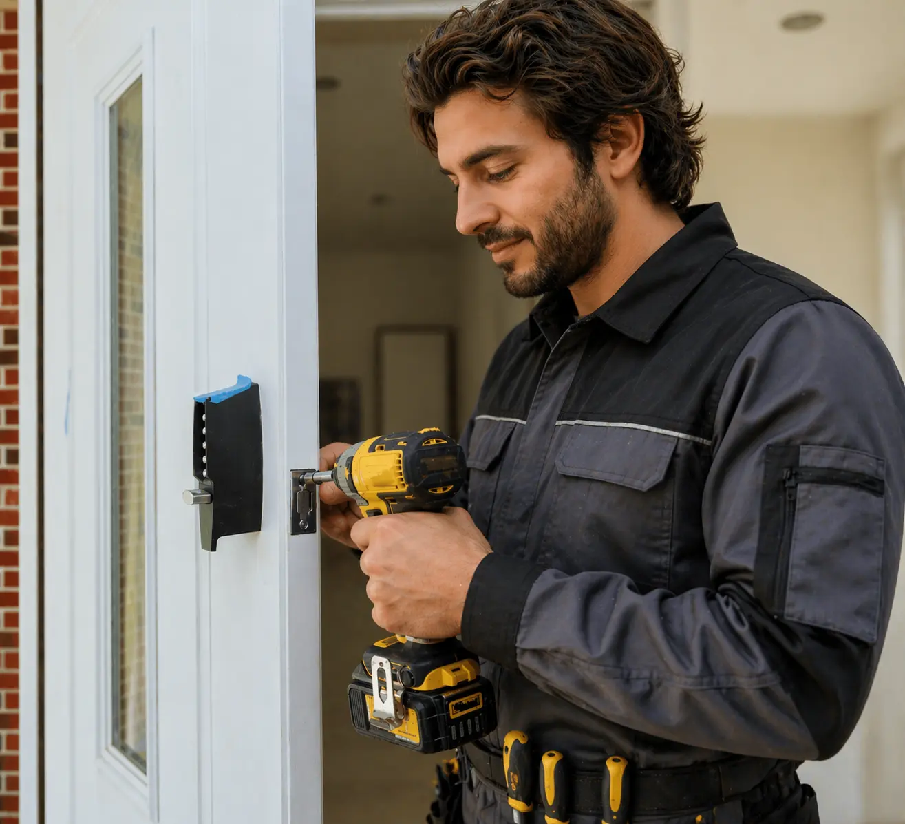
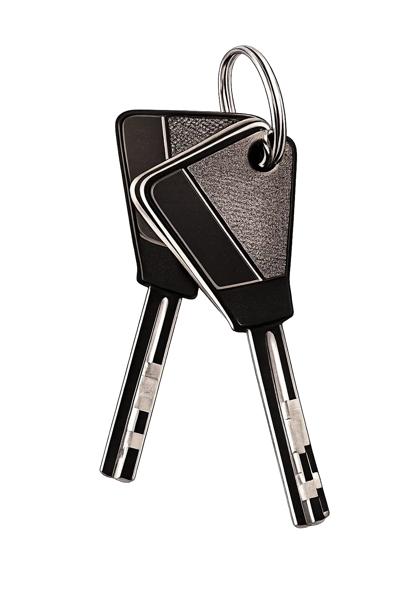
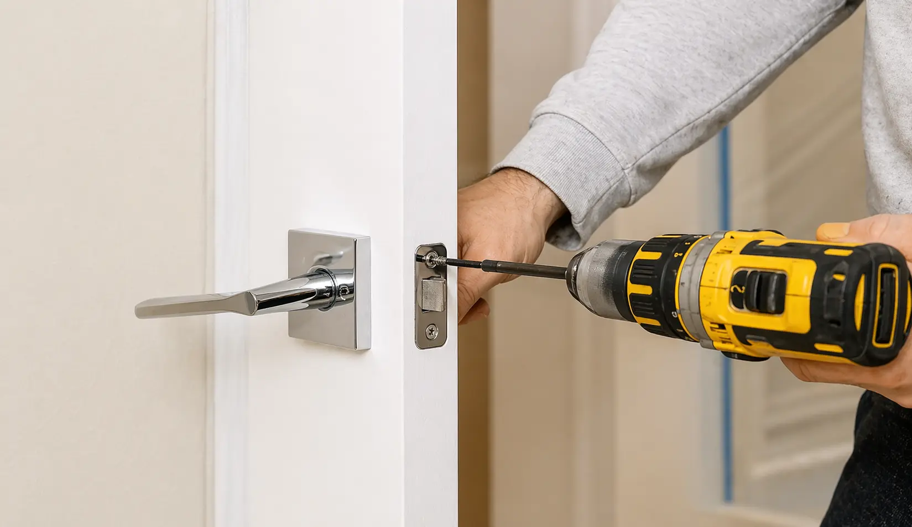
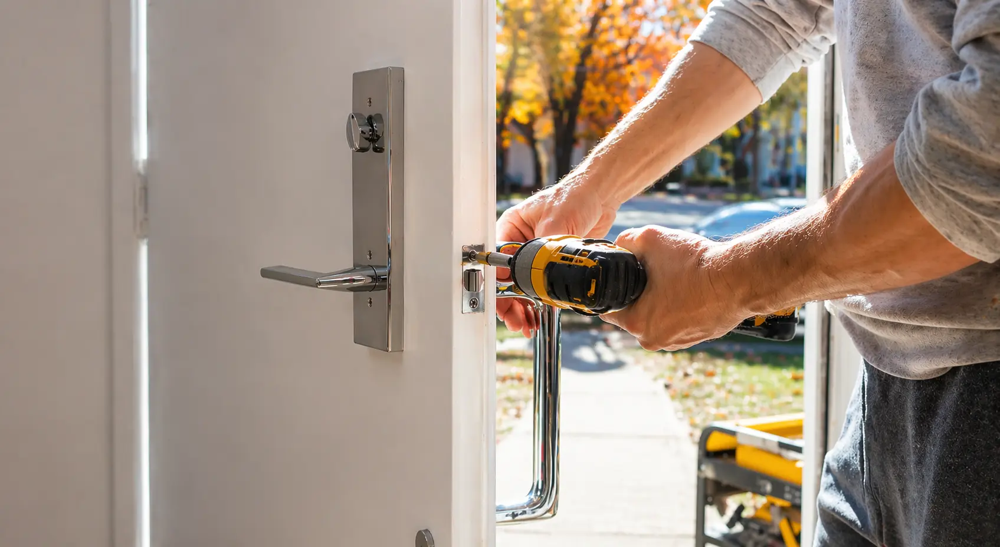
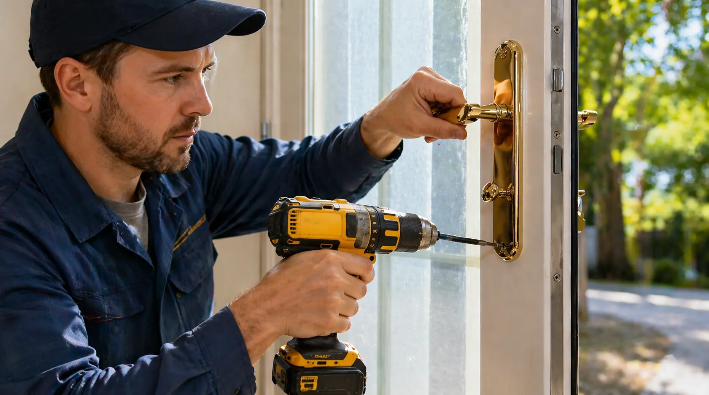
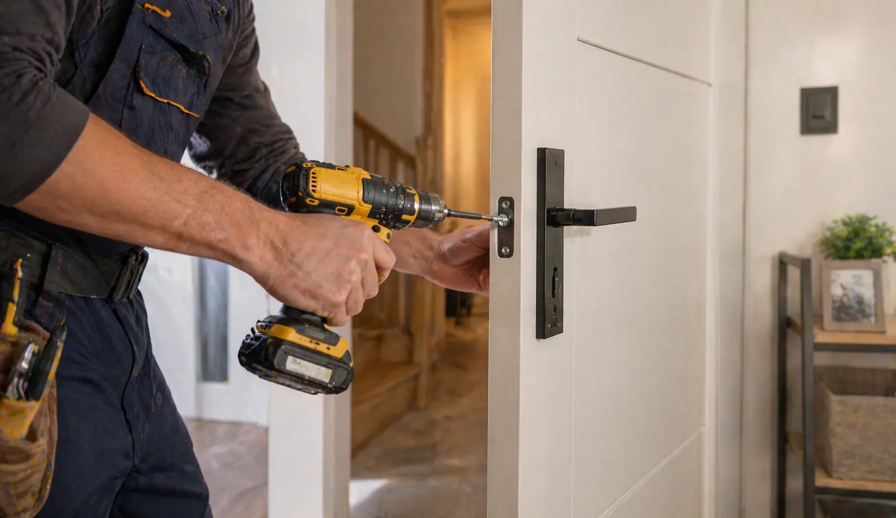

24/7 Emergency Service Available
Reliable Locksmith & Smart Lock Services, Available 24/7
For urgent lockouts, smart lock upgrades, rekeying, and access-related issues across homes, vehicles, storefronts, and business spaces.

Emergency Lockouts
Residential Rekeying
Lock Replacement
Deadbolt Installation
Smart Lock Setup
Office Lockouts
Master Key Systems
Access Control
Car Lockout
Key Fob Programming
Broken Key Help
Post-Break-In Support
About
Experience You Can Trust When It Matters
Lockouts, key issues, and entry upgrades need calm judgment, clear communication, and solutions that fit the door, vehicle, or property instead of forcing the same answer every time.
Emergency Help Available 24/7 For Day And Night

Better outcomes usually start with reading the condition of the lock, the fit of the door, and the actual security goal before rushing into a generic fix.

More About Us
Services
Professional Locksmith Services You Can Rely On
Residential, commercial, automotive, and urgent lock support presented in a clearer format, so the right service type is easier to understand before moving forward.
View All ServicesResidential Locksmith
Lockouts, rekeying, lock changes, deadbolt upgrades, and smart lock options for houses, condos, and rental properties.
Learn moreCommercial Locksmith
Office lockouts, keyed entry planning, master key systems, and access upgrades for retail, mixed-use, and business spaces.
Learn moreAutomotive Locksmith
Car lockouts, key duplication, fob programming, and trunk or ignition-related access issues for everyday vehicle needs.
Learn moreEmergency Locksmith
Urgent lockouts, broken key situations, and post-incident lock support when timing and clear next steps matter most.
Learn more
Why Choose Us
Why Is The Right Choice For You
Clear service categories, dependable locksmith coverage, and a practical focus on access, security, and response when timing matters.
Certified Technicians
Residential, commercial, and automotive work benefits from trained locksmiths who understand the hardware, fit, and security context behind the request.
Trusted & Proven Service
Better outcomes come from clear communication, careful assessment, and locksmith support that fits the actual access issue instead of forcing a generic answer.
Complete Locksmith Services
From lock installation and rekeying to smart lock upgrades, key programming, and entry hardware changes, the scope covers everyday locksmith needs across property and vehicle types.
Fast Emergency Response
Lockouts and urgent access issues often need action without delay, with emergency-ready support for homes, businesses, and vehicles when timing matters most.
Request Emergency Help
Featured Work
Recent Locksmith Work

Residential Lock Replacement & Rekeying
Updated exterior door hardware for a private residence after key issues and lock wear created access concerns.
Result
Improved home security, smoother lock operation, and restored peace of mind at the entry point.
Best for
Homeowners dealing with worn hardware, key control issues, or a recent move that calls for a cleaner reset at the door.
Emergency Home Lockout Assistance
Provided urgent lockout support after a late-night access issue caused by a broken key inside the door cylinder.
Result
Access restored quickly with minimal disruption and no unnecessary damage to the existing hardware.
Best for
Urgent home entry problems where timing matters and the goal is getting back inside without making the lock worse.


Testimonials
What Our Customers Say
Real stories from customers who needed help with lockouts, rekeying, hardware changes, and urgent access issues handled with clarity and care.
“I needed all my office locks changed after losing a master key. Everything was handled quickly and professionally.”
David S.“The late-night emergency service saved me when I was locked out of my apartment. Total lifesaver.”
Rachel M.“The technician was knowledgeable and courteous. He opened my safe without damage at all. Highly recommend.”
Michael B.“Fast, affordable, and trustworthy service. I would absolutely call again if I ever need a locksmith.”
Chris T.“I lost my car key and expected the worst. The replacement was straightforward, fairly priced, and clearly explained.”
Hannah W.“Several duplicate keys were cut for me in minutes. Quick, accurate, and genuinely convenient.”
Daniel F.
FAQ's
Frequently Asked Questions
Find quick answers about locksmith response times, key replacement, smart lock support, and urgent access situations.
Can you make a new key if I lost mine?
Yes. Replacement options depend on the lock, vehicle, or key
type, but many lost-key situations can be resolved with a
new key, rekeying, or updated access hardware when needed.
How much does a locksmith service cost?
Pricing depends on the service type, hardware involved,
timing, and whether the issue needs entry, replacement,
programming, or additional security work.
What should I do if my key breaks inside the lock?
Avoid forcing the broken piece further inside. A locksmith
can usually extract the fragment, inspect the cylinder, and
help determine whether repair, rekeying, or replacement
makes sense.
How long does it take for a locksmith to arrive?
Response times vary by location, traffic, and urgency, but
emergency calls are generally prioritized so access issues
can be handled as quickly and safely as possible.
Do you install smart locks and keyless entry systems?
Yes. Smart locks, keypad systems, and modern entry hardware
can be installed or replaced depending on door fit,
compatibility, and the level of access control needed.
Are locksmith services available 24/7?
Many urgent locksmith services are available around the
clock, especially for lockouts and emergency access issues
where a delayed response could create a bigger problem.